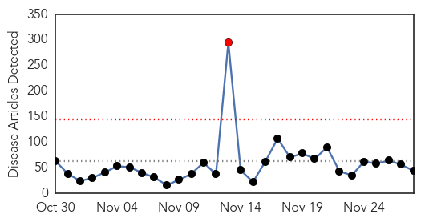
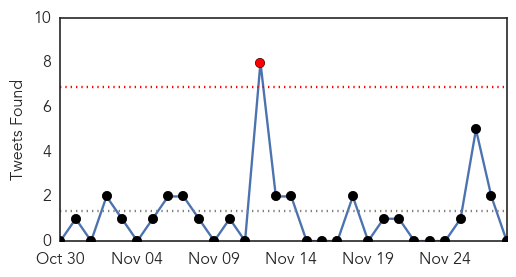
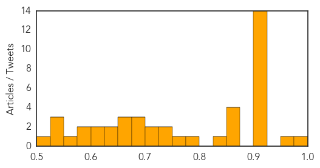

Unknown
30-Day Web Trend
1 alerts, 0 warnings

30-Day Twitter Trend
1 alerts, 0 warnings

Article Locations
Article Confidences
Top Articles:
- 0.990
- Officials make break in baffling disease killing Cambodian children
- 0.959
- Fever in North Darfur localities claims lives - Sudan
- 0.917
- Chicago Tribune
- 0.917
- Chicago Tribune
- 0.917
- Chicago Tribune
- 0.917
- Chicago Tribune
- 0.917
- Chicago Tribune
- 0.917
- Chicago Tribune
- 0.917
- Chicago Tribune
- 0.917
- Chicago Tribune
- 0.917
- Chicago Tribune
- 0.917
- Chicago Tribune
- 0.917
- Chicago Tribune
- 0.917
- Chicago Tribune
- 0.917
- Chicago Tribune
- 0.910
- The world windows to Thailand
- 0.866
- At least 35 people killed, many wounded in Nigerian mosque attack
- 0.862
- NewsDaily
- 0.862
- NewsDaily
- 0.850
- NewsDaily
- 0.826
- Herpes Zoster Risk Slightly Increased in Patients Taking Biologics
- 0.795
- Syria plagued by flesh-eating maggot disease
- 0.773
- Syria hit by flesh-eating maggot disease
- 0.748
- Study provides proof of concept for developing antibodies against human pathogens
- 0.745
- Eye-care: wash your hands before you touch your lenses
- 0.711
- Finland considers drastic measures to stop entry of African swine fever pest
- 0.704
- Italy bans Novartis flu vaccine after suspicious deaths
- 0.698
- Italy bans Novartis flu vaccine after suspicious deaths
- 0.694
- Virus hunters use metagenomics to find cattle disease
- 0.680
- Activists seek to remove fluoride from drinking water systems
- 0.660
- Italy suspends Novartis vaccine after three die
- 0.653
- Mystery over source of E. coli outbreak that put two young children in intensive care
- 0.653
- Mystery over source of E. coli outbreak that put two young children in intensive care
- 0.638
- Shellfish health warning issued for part of Bay of Plenty
- 0.637
- Beware Blackbutt bats: Shellharbour councillor
- 0.623
- Tropical fly-borne illness reported near Damascus - WHO
- 0.622
- Italy bans Novartis flu vaccine after suspicious deaths
- 0.579
- Shellfish warning returns to Bay of Plenty
- 0.576
- Bird flu scare: Kerala begins culling of four lakh ducks
- 0.555
- Culling of poultry birds going on in Kerala
- 0.538
- The most from the coast
- 0.537
- Novartis Flu Vaccine Banned In Italy After Suspicious Deaths : Drugs
- 0.530
- Débat sur la politique de cohésion avec la Commissaire européenne Corina Crețu lors de la prochaine plénière du CdR
- 0.509
- Legionnaire’s disease outbreak declared over
Top Tweets:
- 0.514
- Les premiers secours psychologiques pendant l’épidémie de la maladie à virus Ébola http://t.co/yxZhNIIoZW
Yellow Fever
30-Day Web Trend
1 alerts, 0 warnings
30-Day Twitter Trend
1 alerts, 0 warnings
Article Locations

Article Confidences

Top Articles:
-
No articles found for Nov 28, 2014
Top Tweets:
-
No tweets found for Nov 28, 2014